Color Image Processing
This numerical tour explores color image processing.
Contents
Installing toolboxes and setting up the path.
You need to download the following files: signal toolbox and general toolbox.
You need to unzip these toolboxes in your working directory, so that you have toolbox_signal and toolbox_general in your directory.
For Scilab user: you must replace the Matlab comment '%' by its Scilab counterpart '//'.
Recommandation: You should create a text file named for instance numericaltour.sce (in Scilab) or numericaltour.m (in Matlab) to write all the Scilab/Matlab command you want to execute. Then, simply run exec('numericaltour.sce'); (in Scilab) or numericaltour; (in Matlab) to run the commands.
Execute this line only if you are using Matlab.
getd = @(p)path(p,path); % scilab users must *not* execute this
Then you can add the toolboxes to the path.
getd('toolbox_signal/'); getd('toolbox_general/');
RGB Color Space
A color image \(f \in \RR^{N \times 3}\) is made of three independent images, one for each channel red, green and blue (RGB color space).
Size \(N= n \times n\) of the image.
n = 256; N = n*n;
Loading an image \(f \in \RR^{N \times 3}\).
name = 'hibiscus';
f = rescale( load_image(name,n) );
One can display on screen a color image in RGB space using the rule of additive color mixing.
Display the image \(f\) and the three channels that compose the colors.
R = cat(3, f(:,:,1), zeros(n), zeros(n));
G = cat(3, zeros(n), f(:,:,2), zeros(n));
B = cat(3, zeros(n), zeros(n), f(:,:,3));
clf;
imageplot({f R G B}, ...
{ 'f' 'R (Red)' 'G (green)' 'B (blue)'}, 2, 2);
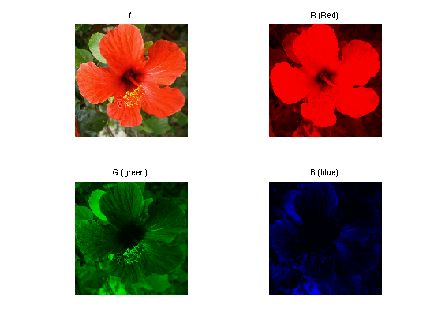 It is possible to obtain a grayscale image from a color image by linear averaging of the channels, to obtain the luminance channel \[ L = \frac{R+G+B}{3} \]
clf;
imageplot({f mean(f,3)}, {'f' 'L'});
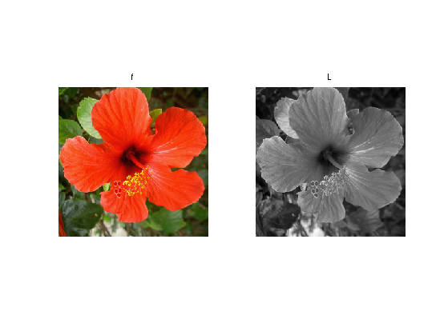 CMY Color Space
Another popular representation for color images uses as basis colors the cyan, magenta and yellow (CMY color space). They are computed as \[ C=1-R, \quad f=1-G, \quad Y=1-B. \]
One can display on screen a color image in CMY space using the rule of substractive color mixing.
Show the C, f, Y channels.
f1 = cat(3, f(:,:,1), f(:,:,2)*0+1, f(:,:,3)*0+1);
f2 = cat(3, f(:,:,1)*0+1, f(:,:,2) , f(:,:,3)*0+1);
f3 = cat(3, f(:,:,1)*0+1, f(:,:,2)*0+1, f(:,:,3));
clf;
imageplot({f f1 f2 f3}, ...
{ 'f' 'C' 'f' 'Y'}, 2, 2);
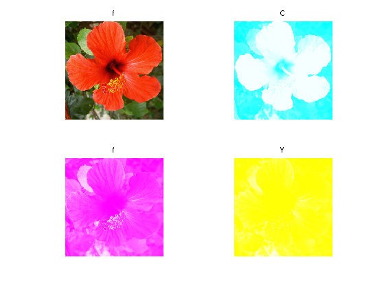 YUV Color Space
A linear color space is defined by applying a transformation matrix \(T \in \RR^3\) to the RGB color channels of the image.
It means that each pixel values \(f(x) \in \RR^3\) is replaced by \(\tilde f(x) = T f(x)\), which store the three channels in the novel color space.
An example of transformation is the YUV color space, where Y is the luminance and UV are the chrominance. It is defined by \[ T = \begin{pmatrix} 0.299 & 0.587 & 0.114 \\ -0.147 & -0.289 & 0.436 \\ 0.615 & -0.515 & -0.100 \end{pmatrix}. \]
T = [.299 .587 .114; ... -.14713 -.28886 .436; ... .615 -.51499 -.10001]';
The RGB to YUV conversion is obtained by applying the matrix.
applymat = @(f,T)reshape( reshape(f, [n*n 3])*T, [n n 3] ); rgb2yuv = @(f)applymat(f,T);
Display the YUV channels.
U = rgb2yuv(f); clf; imageplot(U(:,:,1), 'Y', 1,3,1); imageplot(U(:,:,2), 'U', 1,3,2); imageplot(U(:,:,3), 'V', 1,3,3);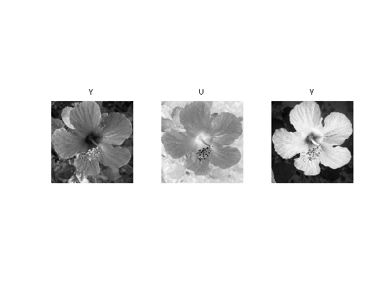
The image can be modified by modifying the YUV representation \(U\) to obtain \(U_1\). Here we lower the chrominance of the image.
U1 = U; U1(:,:,2:3) = U1(:,:,2:3)/2;
Exercice 1: (check the solution) Recover an image from the transformed YUV representation \(U_1\).
exo1;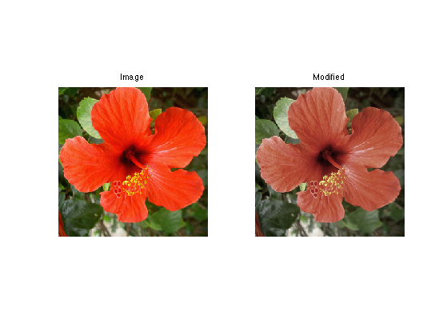
HSV Color Space
A non-linear color space is obtained by a polar or conical parameterization of a linear color space. The angular coordinate in the plane orthogonal to the first linear axis (which is usually the luminance) is called the Hue, and the radial coordinates is called the saturation.
Using a luminance which is the sum of the 3 coordinates, one obtain a color system that is quite close to the HSV color system (which has a more complicated definition, but leads to similar results).
First we compute the value (luminance) coordinate, which is the orthogonal projection on \([1, 1, 1]\).
Value = @(f)sum(f, 3) / sqrt(3);
The we compute the projection on the plane orthogonal to \([1, 1, 1]\), for instance using the projections \(A\) and \(B\) on the two orthognoal unit vectors \[ [0, 1, -1]/\sqrt{2} \qandq [2, -1, -1]/\sqrt{6}. \]
A = @(f)( f(:,:,2)-f(:,:,3) )/sqrt(2); B = @(f)( 2*f(:,:,1) - f(:,:,2) - f(:,:,3) )/sqrt(6);
The \((V,A,B)\) components are obtained from RGB using a transformation with an orthogonal matrix \(T\).
T = [ 1/sqrt(3) 1/sqrt(3) 1/sqrt(3); ... 0 1/sqrt(2) -1/sqrt(2); ... 2/sqrt(6) -1/sqrt(6) -1/sqrt(6)];
The Hue/Saturation are the polor coordinates within this plane.
Saturation = @(f)sqrt( A(f).^2 + B(f).^2 ); Hue = @(f)atan2(B(f),A(f));
Shortcut for HSV color transformation. We name it rgb2hsv1 because it is not exactly a mapping to the classical HSV space.
rgb2hsv1 = @(f)cat(3, Hue(f), Saturation(f), Value(f));
Compute the transformation.
g = rgb2hsv1(f);
Display.
clf;
imageplot({g(:,:,1) g(:,:,2) g(:,:,3)}, {'H' 'S' 'V'}, 1,3);
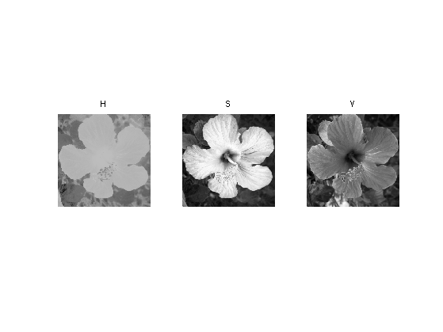 Exercice 2: (check the solution) Show the reconstructed image obtained by progressively rotating the hue component, i.e. replacing \(H\) by \(H + \theta\).
exo2;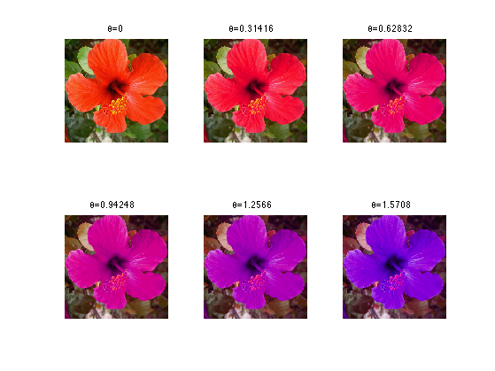
PCA Color Space
Instead of using a fixed color space, one can computed a color space adapted to an image to process.
Store appart the mean.
m = mean(mean(f,1), 2);
Shortcut to compute the point cloud \(X = (f(x)-m)_x \subset \RR^3 \) where the empirical mean is \[ m = \frac{1}{N} \sum_x f(x) \in \RR^3 \]
X = reshape( f - repmat(m, [n n 1]), [n*n 3] );
One compute the empirical 3-D covariance matrix of the point cloud formed by the pixels of the image \[ C = \frac{1}{N} \sum_i X_i X_i^* \in \RR^{3 \times 3} \]
C = (X'*X)/N;
The orthogonal principal directions of the cloud are the eigenvector \(U \in \RR^{3 \times 3}\) of \(C\), that defines the eigen-decomposition of the symetric matrix \[ C = V D V \qwhereq D = \text{diag}(d_1,d_2,d_3) \qwithq d_1 \geq d_2 \geq d_3. \]
[V,D] = eig(C); D = diag(D);
[D,I] = sort(D, 'descend'); V = V(:,I);
The PCA color space is image-dependant, and is defined by \((V,m)\). The transformed image \(g\) in PCA space is defined as \[ g(x) = V^*(f(x)-m) \]
rgb2pca = @(f,V,m)applymat(f - repmat(m, [n n 1]),V); g = rgb2pca(f,V,m);
Display the transformed image.
clf;
imageplot({g(:,:,1) g(:,:,2) g(:,:,3)}, {'PCA_1' 'PCA_2' 'PCA_3'}, 1,3);
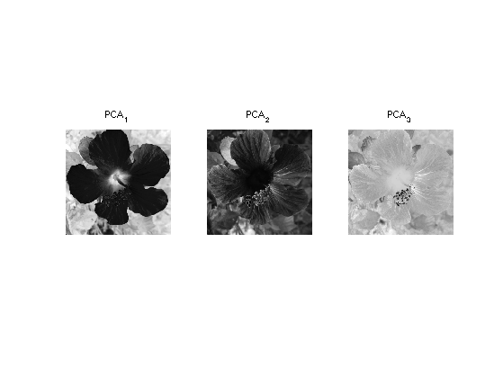 The image, withing this new color space, can be manipulated. Here we lower the chrominance of the image. The result is slighly less visible than with YUV modification because the color space is more adapted to the image.
g1 = g; g1(:,:,2:3) = g1(:,:,2:3)/2;
Exercice 3: (check the solution) Inverse the PCA transformation in order to retrive an image the modified PCA representation U1.
exo3;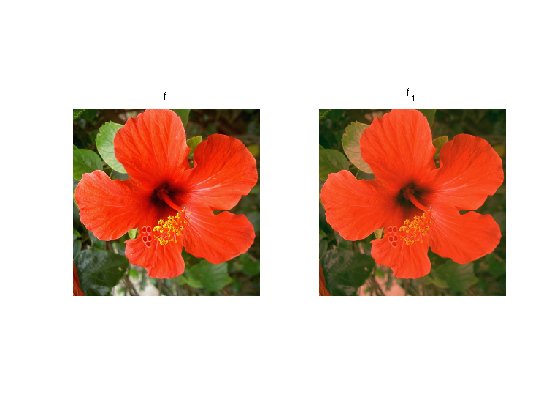
Color Histograms
To better understand the colors structure of an image, it is useful to visualize histogram of the color repartition.
We can display the 1-D histogram of each RGB color channel.
channel = @(f,i)reshape(f(:,:,i), [N 1]);
Number of bins in the histogram.
Q = 60;
Display the histograms.
clf; c = {'r' 'g' 'b'}; lgd = {'R' 'G' 'B'};
for i=1:3
subplot(3,1,i);
[h,t] = hist(channel(f,i), Q);
bar(t,h*Q/N, c{i}); axis('tight');
legend(lgd{i});
end
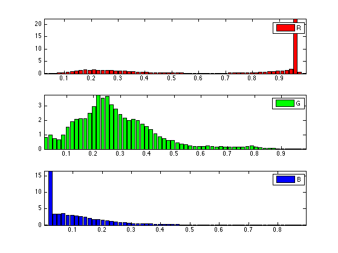 Same thing but for HSV color space.
g = rgb2hsv1(f);
clf; c = {'k' 'k' 'k'}; lgd = {'H' 'S' 'V'};
for i=1:3
subplot(3,1,i);
[h,t] = hist(channel(g,i), Q);
bar(t,h*Q/N, c{i}); axis('tight');
legend(lgd{i});
end
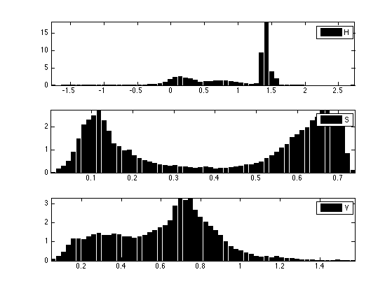 Display this normalized histogram. To make this curve an approximation of a continuous distribution, we normalize \(h\) by \(Q/N\).
Each pixel \(f(x) \in \RR^3\) defines a 3-D point. The color image thus corresponds to a 3-D point clouds whose structure reflects the colors within the image.
Number \(P\) of displayed points.
P = 5000;
Select \(P\) random points.
H = reshape(f, [n*n 3]); sel = randperm(n*n); sel = sel(1:P); H = H(sel,:);
Display the point cloud.
plotp = @(x,col)plot3(x(1,:)', x(2,:)', x(3,:)', 'o', 'MarkerSize', 10, 'MarkerEdgeColor', 'k', 'MarkerFaceColor', col, 'LineWidth', 2); clf; hold on; for i=1:P plotp(H(i,:)', H(i,:)); end view(3);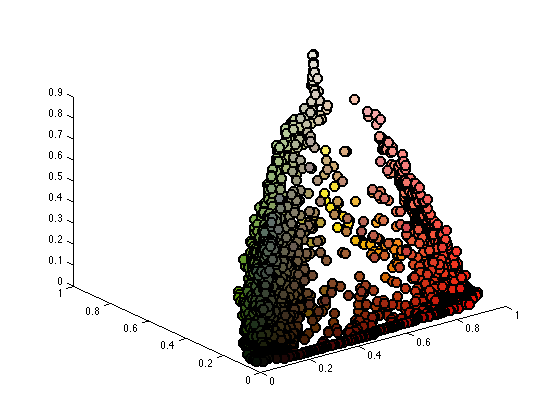
Since the image is mainly composed of red and green, it is easier to simply vizualize the 2-D histogram of the image along these two channels.
Shortcut to compute 2-D histograms.
quantize = @(A,Q)1+round((Q-1)*A); J = @(I,Q)I(1,:)' + Q*(I(2,:)'-1); hist2d = @(f,Q)reshape( accumarray(J(quantize(f,Q),Q), ones(1,N), [Q*Q 1], @sum), [Q Q]);
Number of bins for the display of histograms.
Q = 60;
Display the 2-D histograms of the red/green channels of both images (use log to boost contrast).
func = @(a)log(a+3); X = reshape(f(:,:,1:2), [n*n 2])'; clf; imageplot( func(hist2d(X,Q)) );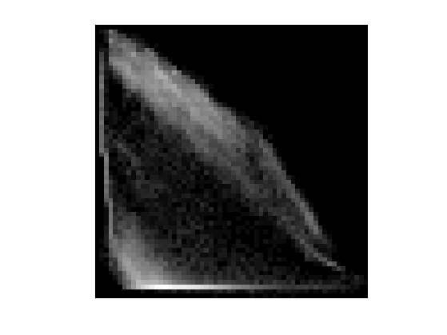
Color Image Denoising and Compression
Color image denoising is more difficult than grayscale denoising because independant denoising of RGB channels introduces color artifact. For image with homogenous colors, it can be avoided by using an appropriate color space.
Noise level.
sigma = .13;
A noisy image color image \(f_1\) is corrupted by a color Gaussian noise.
f1 = f + randn(n,n,3)*sigma;
Display.
clf; imageplot(f, 'f', 1,2,1); imageplot(clamp(f1), 'f_1', 1,2,2);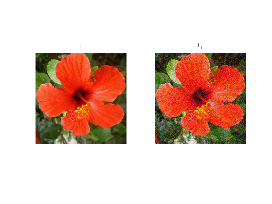
Exercice 4: (check the solution) Compare (translation invariant) wavelet denoising of color image in the RGB and PCA color space (the PCA space should be estimated from the noisy image).
exo4;
Exercice 5: (check the solution) For a complicated, non-homogenous color image, compute a local color space for each pixel, by performing a PCA over group of pixels. Use this adaptive color model to perform wavelet denoising.
exo5;
Similarely to color image denoising, color image compression is difficult because of color artifacts.
Exercice 6: (check the solution) Compare wavelet domain image compression (quantization+coding) over the original RGB space and a more adapted global or local color space.
exo6;